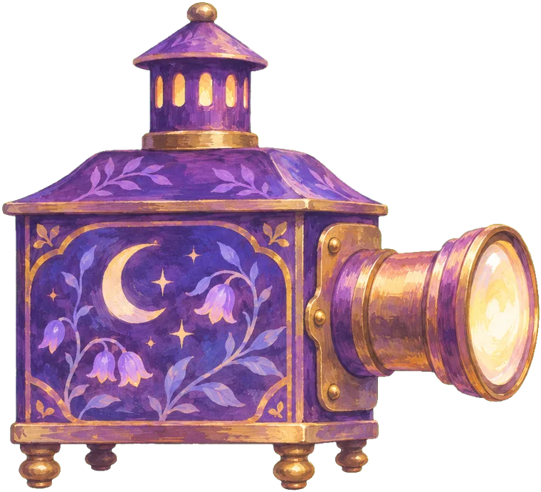

Twelve one-off pieces for chapters, councils and causes, 2024 to 2026.
Films
Films and motion
Ten edits, from trailers to a song interpretation. Choose one to see it large.

Products
Product screens
Four apps I designed, and built in code.
PsyClick
Calmer clinical screening.
A desktop app that reads typing rhythm and mouse movement to support clinician-guided mental health screening. It flags; it does not diagnose. I designed the whole experience and led a four-person team through our thesis defense.
2025 to 2026 · Project manager, backend developer and lead UI/UX designer
A mobile-first app that turns a strength and nutrition plan into a coach that adapts: workouts ease off during your period and push harder in your strongest week. It installs to the home screen, works offline and keeps every log on the phone.
A turn-based math game where you duel Gauss, Newton and Fibonacci; right answers land hits. I designed the entire UI and hand-drew every sprite, from the title screen to the boss animations.
A student budget app that sets aside food and school money from a weekly allowance, then puts the rest toward whichever debt is due soonest. Rebuilt from a one-file prototype into a tested Next.js app with a token-based design system.